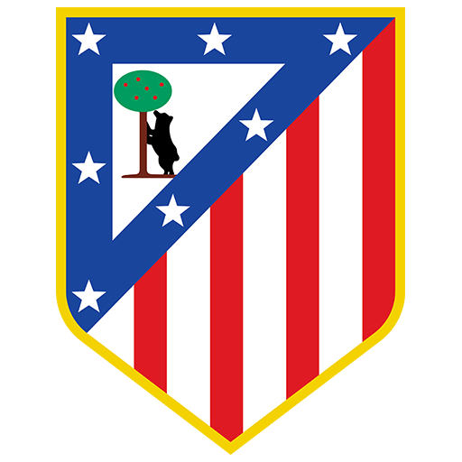

ATLETICO DE MADRID
Atletico de Madriden historia.

ATLETICO DE MADRID
Club Atletico de Madrid 1903ko apirilaren 26an sortu zen Meatze Ingeniarien Eskola Bereziko ikasle bizkaitar talde batek. Bilboko Athletic Clubeko talde filiala sortu nahi zuten. Athletic Club de Madrid deitzen zioten. Hasieran, talde hauek ezin ziren partida ofizialetan elkartu, klub berdintzat hartzen baitziren.Madrilgo Athleticek erabilitako lehen joko-zelaia El Retiroko harresien atzean zegoen, Vallecasko txandan, egungo Menéndez Pelayo. 1903ko maiatzaren 2an, Madrilgo Athleticek bere lehen partida jokatu zuen, klubeko kideen artean jokatutakoa.
1906ko urrian izan zen Athletic de Madrilgo lehen parte-hartzea txapelketa ofizial batean. Abenduaren 6an, txapelketa horretan, bere auzokide madrildisten aurka lehen garaipena lortu zuen.
Madrilgo Athletic Clubek bere lehen araudia ofizialki eratu eta formalizatu nahi zuen, Bilboko Athleticek orain arte bezala erabiltzen jarraitu beharrean. Horrela, 1907ko otsailaren 20an, kluba Bilboko Athletic Clubetik desbideratu zen ofizialki elkarteen erregistroan izena emateko.
Madrilgo Athleticek jokatutako lehen nazioarteko partida Lisboako Internacional taldearen aurka izan zen. Portugalgo hiriburuan jokatu zen 1907ko urtarrilaren 7an, eta portugaldarrek 2-0 irabazita amaitu zuten.
1911n, Madrilgo Athletic Clubek bere lehen partida zurigorri gisa jokatu zuen, bitxia da Bilboko bere parekidearen aurretik egin zuela.
Orri Nagusia